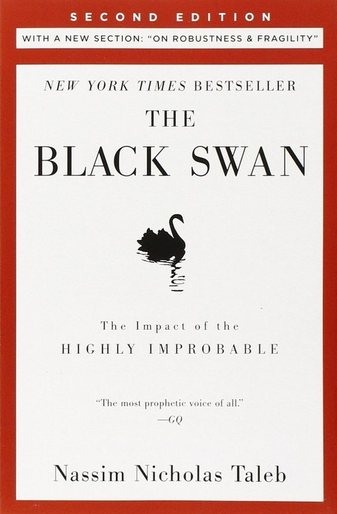

Why do we not acknowledge the phenomenon of black swans until after they occur? Part of the answer,
according to Taleb, is that humans are hardwired to learn specifics when they should be focused on generalities.
We concentrate on things we already know and time and time again fail to take into consideration what we don't know.
We are, therefore, unable to truly estimate opportunities, too vulnerable to the impulse to simplify, narrate,
and categorize, and not open enough to rewarding those who can imagine the “impossible.”